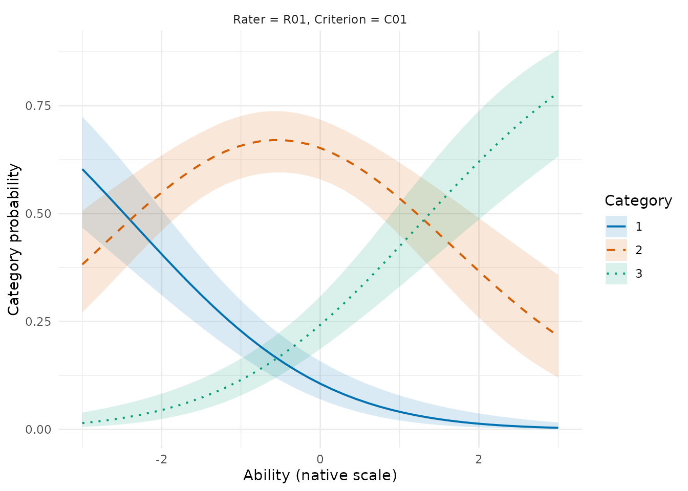
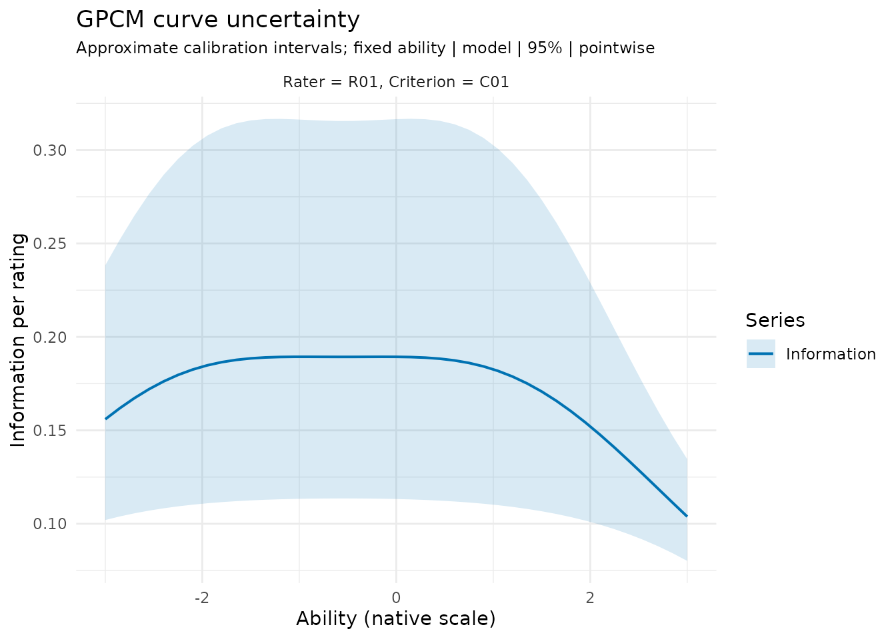
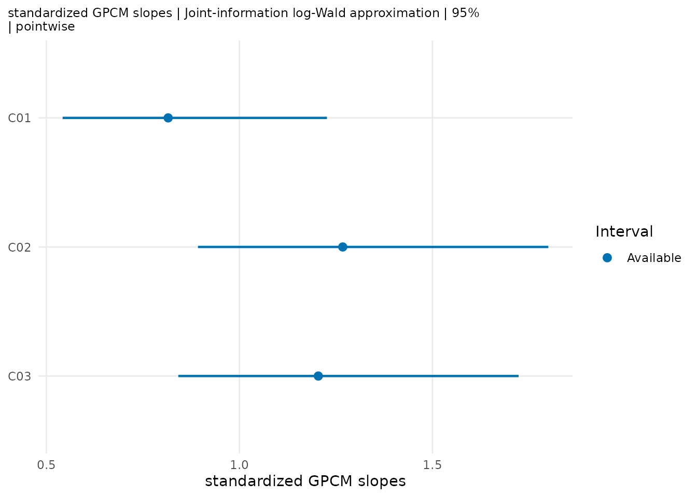

mfrmr includes a Generalized Partial Credit Model (GPCM;
Muraki 1992) in which one selected facet supplies level-specific
discriminations. MML permits a different facet to supply category steps;
JML requires a shared owner. MML information criteria can be compared
when the likelihood and local-solution checks pass.
confint(fit, parm = "slopes") provides approximate
relative-slope intervals when its MML checks pass. Explicit options add
standardized slopes, specified comparisons, independent-cluster
covariance and finite-family adjustment. Separate functions provide
fitted-model bootstrap inference and curve intervals. Several downstream
reporting helpers remain restricted because score-side semantics under
free discrimination differ from the Rasch-family case. This vignette
documents which helpers are available, which are not, and what to use as
a substitute when a helper is restricted.
We call this model GPCM and state its structural choices and output availability separately. Unidimensionality is not a reason to give GPCM a special restrictive name. The JML route uses an unpenalized identified joint likelihood. A non-representable slope proposal can be rejected during line search for numerical safety, but that is not a statistical penalty. If the likelihood has a certified recession direction, the finite optimizer iterate is retained only as a numerical trace and the primary result carries an extended-real or typed boundary status.
What can I report?
The following distinctions apply to the current free-slope model under MML. They describe mfrmr’s available output, not a general impossibility of GPCM inference.
| Output | Current use | What the number does not establish |
|---|---|---|
| Relative slopes and fitted curves | Inspect OptimizerEstimate and numerical diagnostics for
descriptive sensitivity analysis. Estimate retains the same
numerical slope for compatibility. |
A finite optimizer result is not a qualified primary slope estimate. |
| Slope SEs and intervals |
confint(fit, parm = "slopes") or
diagnose_mfrm() returns pointwise relative log-Wald
intervals by default. Explicit confint() options add
standardized slopes, contrasts, sandwich covariance and Bonferroni
adjustment. |
Inspect CIEligible and InferenceReview.
Each option changes the target or approximation; none supplies universal
coverage. |
| Facet and step SEs | Some local SEs remain available for review; read fit readiness and the accompanying precision/interval eligibility. | A finite band does not override the source fit’s inference restriction. |
| Person posterior summaries | Conditional scoring may be available; inspect source readiness and calibration stability. | Posterior SDs do not include uncertainty from estimating the calibration. |
| AIC/BIC/SABIC |
compare_mfrm() returns ranking, deltas and weights when
its MML comparison checks pass. |
ICSelectable covers likelihood/integration,
ICFitEligible covers the numerical solution, and
ICComparable is the final comparison decision. This does
not grant interval or LRT eligibility. |
| PCM/GPCM likelihood-ratio test |
compare_mfrm(..., nested = TRUE) returns an asymptotic
chi-square test for eligible matched MML fits. |
A significant difference does not decide the scoring policy; small or sparse samples can invalidate the approximation. |
Which uncertainty claims are supported?
All the inferential routes below are approximations. A numerical eligibility check establishes whether a calculation can be returned under its stated rules; it does not certify the nominal confidence level for your assessment. The available studies support different claims for different targets:
| Question and API | Evidence and reporting limit |
|---|---|
Relative or population-standardized discrimination:
confint(fit)
|
Joint-information and independent-cluster sandwich calculations have numerical checks and simulation evidence for specified designs. Historical studies do not establish current-estimator coverage for every changed numerical branch. |
A specified ratio or difference:
confint(fit, contrasts = ...)
|
Use the declared scale and full covariance. Evidence for relative contrasts does not transfer automatically to standardized differences; the latter have a separate saved-fit evaluation below. |
Category probability at fixed ability:
mfrm_curve_intervals()
|
Numerical transformations are checked, but nominal coverage failed in some small incomplete designs, including Bonferroni families. Report these as approximate calibration-uncertainty intervals, not validated 95% bands. |
Information per rating:
mfrm_curve_intervals(..., type = "information")
|
Its own saved-fit evaluation is available below. This is neither total test information nor uncertainty in an estimated Person score. |
Matched-model selection or equal slopes:
compare_mfrm()
|
AIC/BIC ranking and the asymptotic PCM/GPCM test require their separate likelihood, nesting and numerical checks. The historical null study does not establish performance for arbitrary sparse designs. |
Bootstrap slopes or a PCM-null test:
bootstrap_mfrm_gpcm()
|
Quantile calculations and accounting for unresolved trials are checked. The one-dataset example does not establish repeated-dataset coverage or Type I error, or fix the probability-interval shortfall. |
For all routes, keep unavailable or unbounded outcomes and saved cautions in your report. Bonferroni concerns the finite family requested in one call; sandwich covariance requires the declared independent clusters. Neither option removes model bias or guarantees small-sample calibration. The APIs remain available with these limits; no data-dependent widening or arbitrary sample-size cutoff is used to conceal the adverse findings.
How uncertain is a relative slope?
Suppose three rubric criteria have relative slopes 0.8, 1.0 and 1.25. Their geometric mean is one. The last criterion has the steepest response curve on this model’s common ability scale. An interval describes sampling uncertainty in that relative discrimination; it does not say that the criterion should receive more scoring weight or that its raters agree more closely.
# After fitting a native GPCM with method = "MML":
# slope_ci <- confint(fit, parm = "slopes", level = 0.95)
# slope_ci
# attr(slope_ci, "diagnostics")[, c("SlopeFacet", "Estimate",
# "CIEligible", "InferenceReview")]The calculation inverts the full joint observed information, including estimated population parameters. It then maps its free log-slope covariance to all slope levels using the sum-zero constraint. The interval for slope is . Working on the log scale keeps bounds positive and accounts for the dependent slope coordinates. Inverting only the slope block of the information matrix would ignore estimation of the other parameters and generally understate uncertainty.
The current likelihood and gradient must match a numerically adequate
fit, and the information must be positive without regularization. Unit
weights, supported score categories and at least 31 quadrature points
are required. Missing bounds retain a reason; increasing iterations
cannot repair every failure. Examine different starts and a denser grid
for consequential results.
diagnose_mfrm(fit)$parameter_uncertainty$slopes supplies
the same 95% intervals; attach_diagnostics = TRUE also
makes them available in the fitted slope table and subsequent weighting
reviews. Ordinary Wright/Pathway maps display ability, facet location or
fit, not these discriminations. Existing information plots remain
plug-in curves; mfrm_curve_intervals() adds calibration
intervals.
These defaults are pointwise model-based
approximations. The optional methods below explicitly change
the target, covariance or multiplicity rule. An interval for
PopulationSD * Estimate needs the variance and covariance
of the estimated population SD. A slope interval containing one is not a
test that all slopes are equal; use the matched PCM/GPCM test for that
question.
The following targeted check used saved fits from an earlier implementation. Later numerical repairs can change fitted solutions or interval availability; these percentages are not an evaluation of refitting every dataset with the current estimator. The check used 100 independent datasets per condition, with three criteria, three raters and three score categories. It crossed the slope owner (Criterion or Rater), equal versus unequal slopes (approximately 0.67, 1 and 1.49), and two designs. With 100 Persons rated by all three raters, intervals were available in every dataset; pointwise coverage across levels was 92–98%. With 40 Persons each rated by two of the three raters, equal-slope availability was 100% and coverage was 95–97%. Unequal-slope availability fell to 96–97%, with coverage among available intervals from 90.6% to 97.9%; the lowest covered-and-returned fraction over all planned datasets was 87%. Some intervals were extremely wide. Four datasets were withheld for regularized information and three for category-support review. These results support an approximate procedure with explicit limits, not a general 95% coverage claim. Each coverage estimate has only 96–100 independent repetitions; the three intervals within a dataset are dependent. Sample size and incomplete assignment changed together, so their effects cannot be isolated from this check.
Choosing the interval for the question
For rubric criteria, a comparison of two slopes asks whether their response curves differ in steepness, conditional on this model. It is not a comparison of rater agreement or a reason to change scoring weights. Prespecify the comparison before looking at which estimates differ most.
The following fictional rubric data give a reproducible example. The simulated model is correctly specified; this illustrates the API, not field performance.
library(mfrmr)
ratings <- simulate_mfrm_data(
n_person = 80, n_rater = 3, n_criterion = 3, score_levels = 3,
model = "GPCM", step_facet = "Criterion", slope_facet = "Criterion",
slopes = c(C01 = 0.8, C02 = 1, C03 = 1.25), seed = 924090
)
fit <- fit_mfrm(
ratings, "Person", c("Rater", "Criterion"), "Score",
model = "GPCM", method = "MML", step_facet = "Criterion",
slope_facet = "Criterion", quad_points = 31, maxit = 400, reltol = 1e-10
)
confint(fit, scale = "standardized")
#> Approximate 95% intervals: standardized GPCM slopes
#> Level Estimate Lower Upper
#> C01 0.8156 0.5422 1.227
#> C02 1.2677 0.8928 1.800
#> C03 1.2044 0.8418 1.723
#> Joint-information log-Wald approximation
#> Pointwise intervals.
slope_levels <- fit$slopes$SlopeFacet
comparison <- matrix(0, 1, length(slope_levels),
dimnames = list("first versus second", slope_levels))
comparison[1, 1:2] <- c(1, -1)
ratio <- confint(fit, contrasts = comparison)
difference <- confint(fit, contrasts = comparison,
contrast_scale = "difference")
attr(ratio, "diagnostics")[, c("Estimate", "CI_Lower", "CI_Upper", "PValue")]
#> Estimate CI_Lower CI_Upper PValue
#> first versus second 0.6433412 0.3856266 1.073287 0.0911965The ratio null is one; the difference null is zero. More rows specify
a finite family. simultaneous = "bonferroni" adjusts both
intervals and the corresponding Wald p-values for all requested rows,
not for other analyses or data-selected comparisons. Standardized slopes
multiply the relative slope by estimated population SD, propagating its
uncertainty and cross-covariances. With latent regression this is the
residual population SD, not the marginal spread across
different covariate groups. Ratios cancel a common scale; differences do
not. JML inference is outside these MML methods.
confint(fit, method = "sandwich", simultaneous = "bonferroni")
#> Approximate 95% intervals: relative GPCM slopes
#> Level Estimate Lower Upper
#> C01 0.7581 0.5201 1.105
#> C02 1.1783 0.7823 1.775
#> C03 1.1195 0.8035 1.560
#> Cluster-sandwich log-Wald approximation
#> Bonferroni family: all targets requested in this call.
# If Persons belong to independent schools, supply a complete Person/Cluster
# mapping and use clusters = schools. Do not cluster separate rows of one Person.Sandwich covariance uses the marginal-likelihood score vector for
each Person, or sums those vectors within a supplied cluster. It needs
many independent clusters with enough score-vector rank. Its target is
the fitted working-model parameter. It does not repair bias from a wrong
population model, informative assignment or dependence between clusters.
The optional adjust = TRUE only multiplies the covariance
by G/(G-1); it is not a small-sample correction with guaranteed
coverage. The earlier 800-dataset relative-interval study does not
qualify these additional procedures by itself. An earlier reanalysis
recalculated intervals on all 800 saved fits, without new simulations or
optimizer runs, and found 90.7–99% pointwise coverage for standardized
model intervals and 90.7–100% for standardized sandwich intervals. The
minimum was 88/97 available intervals in a small incomplete,
unequal-rater-slope condition (Monte Carlo 95% interval 83.1–95.7%;
88/100 covered-and-returned). For three standardized slopes, Bonferroni
family coverage ranged from 91.7–98% with model
covariance and 90–97% with sandwich covariance. Each cell has only 100
independent datasets. These correctly specified normal-population
results show that neither sandwich covariance nor multiplicity
adjustment guarantees nominal coverage in small samples; they do not
test robustness under misspecification.
A fitted-model bootstrap alternative
The parametric bootstrap asks what variation occurs if independent Persons and scores follow the fitted model on the same observed rating assignment. It preserves covariates and facet labels, and reestimates the free population parameters. Unassigned ratings stay unassigned. It does not test whether the assignment mechanism or the normal population assumption is correct.
boot <- bootstrap_mfrm_gpcm(fit, nsim = 499, seed = 92401)
confint(boot, scale = "standardized")
confint(boot, contrasts = comparison, simultaneous = "bonferroni")
boot$trials # Includes every planned trial, its last stage and any reason/warning.
apa_table(boot, which = "checks") # Returned fits: categories, convergence and information.
# boot$refit_draws retains returned parameters for diagnosis, not interval calculation.
# For an eligible matched PCM fit with the same population model:
lr_boot <- bootstrap_mfrm_gpcm(fit, null_fit = pcm_fit,
nsim = 499, seed = 92402)
lr_boot$testThe interval uses basic bootstrap error quantiles, on a log scale for
positive slopes/ratios and on the original scale for differences. Failed
refits and returned estimates rejected by eligibility checks are
retained as unknown outcomes. The reported limits enclose all
completions, possibly reaching zero or infinity; deleting failures could
instead conceal the least stable cases. The LRT reports Monte Carlo
precision and p-value bounds when any refit is unresolved. Its
null-model draws cannot supply slope intervals around the alternative
fit. Saved results support new confidence levels without refitting. More
repetitions improve tail resolution, not model validity; inspect
attr(confint(boot), "expected_tail_draws"), especially with
many simultaneous comparisons. This is an approximate bootstrap method,
not a profile-likelihood implementation or an exact small-sample
test.
For basic slope bootstrapping, a category observed once is now a
warning rather than an automatic exclusion. The source fit and each
refit must still pass model-identity and numerical checks, including
unregularized joint information. The exception requires a fresh audit
confirming that every category is observed in each step scope and no
step coordinate or category contrast is unsupported. It does not change
the fit’s saved readiness or permission for Wald intervals, IC
comparisons or LRTs. checks$BootstrapEligible and
checks$WaldEligible distinguish these decisions. Source
decisions are in source_checks. Accepted singleton warnings
remain in the interval diagnostics, printed output, default plot
subtitle and reports, even when limits are finite. A supplied subtitle,
including NULL, overrides the default plot text.
The basic interval formula itself does not require a variance
estimate in every replicate; variance estimates are required for
studentized intervals, as explained in the R
boot documentation. Separating those formulas does not establish
that an unstable estimate is suitable for basic-bootstrap inference. Use
trials$Stage, trials$AlternativeReturned and
checks to distinguish the reasons. Missing check fields
mean that the quantity was not recorded. Older saved results may have
only a combined reason and no rejected parameter vectors.
A small-sample example illustrates why unresolved replicates matter. Its original 499-replicate run accepted 408 estimates. Rechecking 62 category-support cases under a revised acceptance rule produced an assembled result with 470 accepted and 29 unresolved estimates. That assembled result is a comparison of procedures, not a complete bootstrap run under the current estimator. All three standardized 95% intervals still extended from zero to infinity. This is one dataset, not evidence of repeated-dataset coverage or a failure rate for other designs.
Preserve an original bootstrap when changing estimation or acceptance rules. A complete new run is needed to evaluate the changed procedure; replacing selected failed draws cannot establish its performance. Saved reanalysis history, when present, follows printing, slope intervals and reporting tables. Missing history does not establish that an older result used the current procedure. Neither more replicates nor selective replacement automatically resolves poor identification or validates interval coverage.
Why an information warning needs a parameter-specific review
Inspect boot$checks (or
apa_table(boot, which = "checks")) for
PopulationSD, MinimumStandardizedSlope and
MaximumStandardizedSlope. These describe the returned
optimizer estimates, including rejected refits. For an estimated
population, standardized slopes multiply relative slopes by the residual
population SD; for a fixed standard-normal population that SD is one.
Missing entries indicate missing retained estimates. These fields are
diagnostics, not thresholds for judging raters or permission to use a
CI. APA check tables use significant digits for these values and the
gradient/ information diagnostics, preserving small positive values in
table conversion. The original boot$checks columns remain
unrounded numeric values.
The 29 unresolved trials illustrate different reasons for withholding inference. Independent likelihood and derivative calculations helped separate finite numerical stopping points from evidence for boundary approaches. These checks diagnose the selected examples; they do not certify global maxima or repeated-sample interval accuracy.
| Main finding in this one-dataset audit | Cases | Consequence |
|---|---|---|
| An unused top category in an unanchored step scope gives a monotone likelihood direction as its intercept cost increases | 15 | A threshold has no finite maximizer. In one checked example the slope estimates remained stable across starts; that does not validate all slope intervals. |
| Restarts and fixed-slope profiles support approach to zero standardized discrimination; the direction persists at 61 and 101 quadrature nodes | 11 | Evidence for a boundary limit, not just a large standard error. These numerical checks do not certify a global maximum. |
| Reparameterized optimization finds a better solution with a positive standardized slope and positive local curvature | 2 | The original numerical stopping point needs improvement. A warning attached to that original point is insufficient. The current optimizer and information refinement recover eligible finite solutions in these two selected examples; this does not replace a complete bootstrap evaluation. |
| A very steep standardized slope is highly sensitive to quadrature | 1 | At the same saved parameters, changing 61 to 101 nodes changes negative log-likelihood from about 185 to 858. Neither grid is thereby validated. |
These are primary findings; numerical and boundary problems can overlap. An unused category in a replicate is a sampling outcome, not evidence that the scoring category should be removed. A near-zero standardized slope can coexist with other finite standardized slopes. Keeping the geometric mean of relative slopes at one can then make relative slopes and location coordinates extreme. Conversely, a stable discrimination estimate does not establish a finite threshold. The assembled example retains all 29 unresolved trials. The two improved finite solutions are separate numerical evidence; they have not been inserted into its draws or counted as a current-procedure bootstrap result.
For small fixed-grid GPCM MML fits (up to 64 free parameters, with
reltol <= 1e-9), the direct optimizer now reviews
numerical curvature even after a small raw gradient. Negative curvature
triggers up to three BFGS restarts in rescaled search coordinates. Each
uses the requested iteration ceiling. Only a non-worsening, numerically
converged candidate without detected negative curvature can replace the
selected point. Otherwise the estimate is retained with a numerical
warning. Inspect fit$opt$optimizer_polish$Stages:
StageLabel == "curvature_rescale" identifies these
attempts, and SmallestCurvature,
CurvatureScale and CurvatureReviewError
explain the curvature review. Missing curvature entries mean it was not
evaluated. The search rescaling does not provide a regularized
covariance estimate. An improved optimizer result still needs separate
information and integration checks; positive numerical curvature alone
is insufficient.
Poor conditioning does not by itself mean that an information matrix must be regularized or discarded. It can reflect parameter units, weak information, or numerical differentiation error. The shared MML calculation now compares two refined Hessians, checks their unregularized inverse and reviews the gradient in the curvature metric. If these checks pass, intervals can be returned with a saved caution. Otherwise they remain unavailable. The information workspace budget covers the additional calculation too.
In the remaining finite-solution example, the standardized log-slope
SE changed from about 30 with the default numerical differentiation to
about 27 after refinement, agreeing with the reference parameterization.
Nevertheless, the weakest discrimination’s 95% log-Wald interval spans
roughly
to
.
Returning that interval makes the lack of precision visible; it does not
make the approximation trustworthy near zero. Examine
attr(intervals, "cautions") and
InferenceReview, which also appear in printing, default
plot subtitles and reports. This numerical review does not establish
sampling coverage or turn a boundary limit into a finite estimate.
Further requirements include integration and parameter-specific boundary estimates and inference. The examples support different treatment of different targets; they do not validate ordinary Wald intervals or demonstrate repeated-dataset coverage.
Uncertainty in probability and information curves
For example, examine a single rater/criterion context across known ability values. The existing probability and information plots still describe fitted points. This API propagates the full calibration covariance into each curve point, using logit intervals for probabilities and log intervals for information.
grid <- expand.grid(Theta = seq(-3, 3, length.out = 41),
Rater = "R01", Criterion = "C01")
curves <- mfrm_curve_intervals(fit, grid)
plot(curves, title = NULL, subtitle = NULL)
information <- mfrm_curve_intervals(fit, grid, type = "information")
plot(information)
Crosses identify fitted points whose intervals are unavailable. The
caption counts these points; a missing ribbon does not mean negligible
uncertainty. Ribbons stop at unavailable grid points. Inspect
plot_data(curves, "table") for the saved
InferenceReview reasons. Use caption = NULL to
hide the caption; the crosses and saved reasons remain. Long default
warnings wrap within the figure.
For slope or ratio intervals spanning many orders of magnitude, a logarithmic axis can make the estimates easier to compare:
# When estimates and finite interval bounds are strictly positive:
# as_ggplot(ci) + ggplot2::scale_x_log10()Keep a linear axis for signed differences. A logarithmic display does not reduce uncertainty or establish interval accuracy.
Replace these labels with levels in the fitted model and include
every non-Person facet. Information is per rating:
slope squared times the conditional category variance. It is not total
information summed over the observed exposures. Theta is
fixed on the fitted native ability scale; uncertainty in a Person score
is not included. Lines and ribbons retain their numerical table, use
color plus line type, and accept custom palettes and omitted titles.
Sandwich covariance is optional. Bonferroni adjustment is applied over
the finite output grid, including all categories; connecting points does
not produce a simultaneous confidence band for every value between
them.
What the additional interval checks found
Do the slope-interval results also describe uncertainty in differences and curves? To examine that question, a further reanalysis used all 800 saved fits, with the current interval calculations and their availability checks. It did not generate new datasets or refit the historical estimates. Numerical repairs to estimation can change those estimates, so this is evidence about the saved-fit analysis, not an independent evaluation of the current estimator.
The generating facet effects were saved for every dataset. They were
centered to the fitted reference before comparing curves at native
ability values Theta = -2, 0, 2. Each slope-owner level was
evaluated with the other facet at its second level. This gives nine
rating contexts, 27 category probabilities and nine information values.
Standardized differences compare the first with the second slope and the
second with the third; they include population-SD uncertainty. Model and
independent-Person sandwich covariance used the same fits. The
confidence level was 95%, without a small-cluster adjustment.
The table gives ranges across the eight original conditions and the specified targets. Pointwise coverage concerns one target at a time. Family coverage requires every interval in the specified call to cover its truth; a family contains two differences, 27 probabilities or nine information values.
| Target | Pointwise: model | Pointwise: sandwich | Bonferroni family: model | Bonferroni family: sandwich |
|---|---|---|---|---|
| Standardized slope differences | 91.0–98.0% | 91.0–99.0% | 92.9–98.0% | 93.9–98.0% |
| Category probabilities | 88.0–100.0% | 85.6–99.0% | 84.7–96.0% | 83.7–97.0% |
| Information per rating | 90.7–100.0% | 89.8–99.0% | 95.0–100.0% | 92.0–98.0% |
These percentages condition on available intervals or complete available families. Each condition has 100 independent datasets, not one independent replication per curve point. Depending on the target and condition, 96–100 pointwise intervals were available. In the small incomplete unequal-rater-slope condition, the sandwich probability family covered in 82 of 98 available datasets: 83.7%, with a Monte Carlo 95% interval of 74.8–90.4%. It was covered and returned in 82 of all 100 planned datasets. That Monte Carlo interval describes this cell, not simultaneous uncertainty for the minimum across cells.
Bonferroni does not fix an inaccurate marginal approximation. The curve results show a limitation even under the generating model’s assumptions; sandwich covariance is not an automatic solution. Read a returned interval as an asymptotic approximation, especially in small incomplete designs. Do not interpret numerical eligibility as demonstrated 95% coverage, turn curve differences into rater-quality verdicts, or assume that the bootstrap has resolved this limitation without its own repeated-dataset evidence. The two source designs also change sample size and assignment together, so the results cannot isolate an effect of sparsity. They do not establish performance for other grids, misspecified models or the latest refitted solutions.
Checking the updated estimator on the affected design
The entire small incomplete, unequal-rater-slope condition was then refitted: all 100 datasets, including cases whose intervals missed the truth or were unavailable. The updated numerical implementation used ordinary initialization and the same model, 61-point quadrature, iteration ceiling and convergence tolerance. All fitted parameters, objective values, probability estimates and interval endpoints were identical to the earlier results. Model and sandwich Bonferroni families still covered 83/98 and 82/98 available datasets, respectively. Updating the optimizer therefore did not resolve this shortfall in the selected condition.
These are the same 100 datasets already included in the 800-fit
study, not another 100 independent replications or an independent
confirmation after selecting a condition. Analytic probability
derivatives and full-covariance delta intervals were also checked on two
prespecified refits. The largest endpoint discrepancy from the API was
below 2e-9. This checks the probability transformation; it
does not establish global optimization, quadrature accuracy or
finite-sample coverage, nor identify approximation error as the only
cause.
For a small incomplete assessment, use these bands as approximate
descriptions of calibration uncertainty. Do not rely on their nominal
95% label alone to claim that an entire curve is covered or that two
curves clearly differ. Such a conclusion needs an uncertainty method
justified for the study’s design and model. A larger sample, a simpler
model or bootstrap may be worth assessing, but none is an automatic
correction established by this check. Printing and default figure
subtitles now identify the intervals as approximate;
CIEligible continues to describe numerical
availability.
Carry the selected inference into reports and figures
A rater’s severity, discrimination and residual fit answer different questions. Wright maps locate fitted abilities and facet effects; Pathway maps relate location to fit statistics. A slope interval instead describes discrimination under its stated scale and covariance method. Adding a slope interval must not replace severity intervals, Infit/Outfit, or a feedback decision with a different target. In particular, a larger slope does not automatically mean a better rater or a larger recommended scoring weight.
ci <- confint(fit, scale = "standardized")
results <- mfrm_results(fit, intervals = list(slopes = ci, curves = curves),
include = c("fit", "plots"), compute = "never")
plot(results, type = "gpcm_slopes", title = NULL)
apa_table(ci)
#> GPCM inference
#> SlopeFacet Estimate SE LogSE CI_Lower CI_Upper NullValue PValue CIEligible
#> C01 0.82 0.17 0.21 0.54 1.23 1 0.33 TRUE
#> C02 1.27 0.23 0.18 0.89 1.80 1 0.18 TRUE
#> C03 1.20 0.22 0.18 0.84 1.72 1 0.31 TRUE
#> InferenceReview
#> Approximate inference for standardized GPCM slopes with model covariance; finite-sample coverage is not guaranteed.
#> Approximate inference for standardized GPCM slopes with model covariance; finite-sample coverage is not guaranteed.
#> Approximate inference for standardized GPCM slopes with model covariance; finite-sample coverage is not guaranteed.
#> Target Method
#> standardized GPCM slopes Joint-information log-Wald approximation
#> standardized GPCM slopes Joint-information log-Wald approximation
#> standardized GPCM slopes Joint-information log-Wald approximation
#> ConfidenceLevel Adjustment
#> 95% Pointwise
#> 95% Pointwise
#> 95% Pointwise
#> Note. Approximate inference under the stated target and method; unavailable outcomes remain present. No rater-quality or scoring-weight decision is implied.
head(plot_data(results, type = "gpcm_curves", component = "table"))
#> Theta Rater Criterion InputRow Category Estimate SE Lower
#> 1 -3.00 R01 C01 1 1 0.60325691 0.066981814 0.467678416
#> 2 -3.00 R01 C01 1 2 0.38214029 0.061204608 0.271200772
#> 3 -3.00 R01 C01 1 3 0.01460280 0.007433955 0.005354808
#> 4 -2.85 R01 C01 2 1 0.57466763 0.065516836 0.444124935
#> 5 -2.85 R01 C01 2 2 0.40786940 0.059305024 0.298581102
#> 6 -2.85 R01 C01 2 3 0.01746298 0.008336183 0.006811562
#> Upper CIEligible
#> 1 0.72463594 TRUE
#> 2 0.50689748 TRUE
#> 3 0.03919313 TRUE
#> 4 0.69556768 TRUE
#> 5 0.52709923 TRUE
#> 6 0.04403185 TRUE
#> InferenceReview
#> 1 Approximate calibration uncertainty at fixed ability and rating context; finite-sample coverage is not guaranteed.
#> 2 Approximate calibration uncertainty at fixed ability and rating context; finite-sample coverage is not guaranteed.
#> 3 Approximate calibration uncertainty at fixed ability and rating context; finite-sample coverage is not guaranteed.
#> 4 Approximate calibration uncertainty at fixed ability and rating context; finite-sample coverage is not guaranteed.
#> 5 Approximate calibration uncertainty at fixed ability and rating context; finite-sample coverage is not guaranteed.
#> 6 Approximate calibration uncertainty at fixed ability and rating context; finite-sample coverage is not guaranteed.
#> Context Series IntervalGroup
#> 1 Rater = R01, Criterion = C01 1 Rater = R01, Criterion = C01.1.0
#> 2 Rater = R01, Criterion = C01 2 Rater = R01, Criterion = C01.2.0
#> 3 Rater = R01, Criterion = C01 3 Rater = R01, Criterion = C01.3.0
#> 4 Rater = R01, Criterion = C01 1 Rater = R01, Criterion = C01.1.0
#> 5 Rater = R01, Criterion = C01 2 Rater = R01, Criterion = C01.2.0
#> 6 Rater = R01, Criterion = C01 3 Rater = R01, Criterion = C01.3.0The reproduction code in
summary(results)$reproducible_code saves and reloads the
complete result, preserving attached inference. In that code,
res denotes your result object
(res <- results here); choose the file path before
saving. The starter export index also links the saved GPCM inference
figures alongside the ordinary maps, with separate interpretation
guidance.
The same stored values are available through
mfrm_report(results) and
export_mfrm_results(results, ...). Named results define
lowercase plot routes. Use
as_ggplot(results, type = "gpcm_curves") for further ggplot
customization; title = NULL or subtitle = NULL
removes the corresponding annotation. Plots distinguish unavailable
intervals by crosses and unbounded intervals by open circles, retaining
their full limits and reasons in the tables. Color and line type
distinguish probability curves. No reference cutoff is chosen for a
slope plot; reference is an explicit optional plotting
choice.
Source matching checks fitted data, parameters, population and
integration settings before attachment. Reusing a saved bundle does not
change the selected method, recompute intervals or rerun a bootstrap.
For bootstrap slopes, pass
confint(boot, scale = "standardized", level = .90) to
preserve that choice; passing the raw boot object selects
its default relative 95% pointwise intervals. The export replay reloads
the saved RDS. The full archive contains the fitted data and
identifiers, so review it before sharing.
Check that the integration grid does not change the decision
mml_quadrature_sensitivity(fit, data, quad_points = c(41, 61))
preserves explicit population formulas, covariates and factor coding.
Its slope table contains both interval endpoints and eligibility; the
summary reports their changes. For a PCM/GPCM comparison, apply the
helper to each model and rerun compare_mfrm() on their fits
at each common grid. Compare the IC/LRT decisions as
well as estimates; increasing the GPCM grid alone changes the comparison
basis. A small observed change is evidence for that fit and grid, not a
universal integration certificate.
Information criteria and parameter intervals need different evidence. The R documentation for AIC requires maximized likelihoods on comparable data. Computing an AIC number does not require a slope confidence interval. In mfrmr, the comparison uses the declared parameter count, numerical solution and integration settings. Users should assess competing starts and integration sensitivity, particularly when a model-choice decision is close. An interval procedure also needs a justified covariance or other uncertainty method, the correct constrained-parameter transformation, and evidence about its repeated-sampling behavior. Neither decision requires a theorem covering every conceivable GPCM likelihood path.
An unavailable slope interval does not automatically invalidate a
separately eligible IC comparison or matched PCM/GPCM test. Older saved
fits must not gain intervals from stored flags alone; rerun
confint() or diagnose_mfrm() to check the
retained solution and refresh its uncertainty tables.
Why intervals, information criteria and tests need separate checks
Slope confidence intervals. The package uses the joint covariance in free coordinates, maps it to sum-zero log slopes and exponentiates the log-Wald limits. Its separate qualification checks preserve missing results for singular, regularized or unstable information. The result is an asymptotic approximation, not exact coverage for every possible dataset. The mirt documentation also provides GPCM fitting and information-matrix SE methods; that establishes a methodological precedent, not numerical validation of mfrmr.
Information-criterion comparison. The package
already calculates
and
,
with
equal to the number of Persons for the ordinary MML route and
the free-parameter count. For GPCM, the comparison reevaluates the
retained likelihood, gradient and observed information without rerunning
the optimizer. It checks agreement with the stored objective, the
existing gradient tolerance (at most
),
and positive unregularized information using the same relative
eigenvalue tolerance as covariance inversion. IC/LRT and slope intervals
share the full joint information calculation. The old IC/LRT-specific
80-coordinate cutoff is replaced by a dense-matrix workspace budget,
configurable with
options(mfrmr.max_information_bytes = 256 * 1024^2). This
estimates eight double-precision square matrices; it excludes data,
integration arrays and other process memory. An unavailable check
returns its reason. This local check is separate from
InferenceReady and does not qualify a slope interval.
Same-data/likelihood, free-parameter-count, unit-weight and integration
checks still apply. There is no requirement that the candidates be
nested. Local curvature does not prove global optimality, and sorting
candidate IC values is not a test that the winning model is true.
PCM/GPCM likelihood-ratio test. For the current
relative-slope parameterization, let
,
with
.
The PCM null is
.
It imposes
independent restrictions when the population model, steps, other facets
and constraints are identical. The null value
is inside the positive slope space; it is not a zero-variance boundary.
Under the usual identified, interior and regular MML conditions, the
candidate reference is
asymptotically. The implemented test verifies the matched
null/alternative population model, step and facet constraints, fixed
interactions and free dimensions. It reuses the likelihood, gradient and
unregularized-information checks described above. A negative likelihood
gain is a numerical failure and does not become p = 1. The reference
assumes independent Persons and correctly specified response and
population models, with regular interior solutions. It is an asymptotic
approximation, especially uncertain in small or weakly linked designs.
Default calls can differ in population assumptions, so changing only
model = "PCM" to model = "GPCM" does not
necessarily test slopes alone. The mirt
model-comparison documentation distinguishes ordinary
likelihood-ratio comparisons from boundary-null tests. That distinction
does not require a mixture chi-square test merely because GPCM slopes
are positive.
A simulation illustration examined the approximation under a true PCM, using three raters, three criteria, three score categories and normally distributed Person abilities. In the crossed design, each of 100 Persons was rated by all three raters on all three criteria. In the rotating design, each of 40 Persons was rated by two of the three raters on all three criteria. The latter changes both sample size and assignment density, so it does not isolate the effect of sparsity. Rater and criterion locations varied across replications; the slope null was always true. Both fitted models estimated the population mean and variance on the same 61-point integration grid.
| Slope facet | Rating design | Rejections at 5%, out of 100 | 95% Monte Carlo interval |
|---|---|---|---|
| Criterion | Crossed, 100 Persons | 5 | 1.6%–11.3% |
| Rater | Crossed, 100 Persons | 7 | 2.9%–13.9% |
| Criterion | Rotating, 40 Persons | 6 | 2.2%–12.6% |
| Rater | Rotating, 40 Persons | 7 | 2.9%–13.9% |
All 400 pairs supplied a test in these conditions. The intervals above are exact binomial intervals describing uncertainty in the simulated rejection rates, not parameter confidence intervals. The point estimates do not show a large departure from 5%, but 100 replications per condition give limited precision. They do not guarantee calibration under other sample sizes, category support, dependence, assignment or population distributions. In the first replication of each condition, increasing both fits to 121 integration points changed the likelihood-ratio statistic by less than ; this illustrates a sensitivity check, not a universal integration-error bound.
These explanations separate missing mfrmr functionality from failures of a particular fit. They do not imply that every model needs every downstream workflow, or that JML inherits the MML reference distribution.
Relationship to generalized many-facet models
Ordinary GPCM adds a positive discrimination parameter to the partial-credit kernel; it does not replace the item position or step parameters. In the current many-facet notation,
where the additive predictor contains person ability and the signed locations of the observed facets. Thus the selected slope multiplies the complete adjacent-category predictor: person ability, every facet location or fitted interaction inside , and the owned step. It is not a loading-only formulation in which discrimination multiplies ability but leaves rater severity and other intercept effects unscaled. Unit slopes reduce this expression to the equal-discrimination PCM kernel.
The phrase generalized many-facet Rasch model is broader and
is not a unique synonym for this implementation. For example, Uto and
Ueno (2020, equation 9) use multiplicative task and rater slope blocks,
,
together with rater severity and rater-specific steps. The current mfrmr
GPCM estimates one slope family. MML can separate the slope owner from
the step owner; JML requires slope_facet == step_facet. It
does not jointly estimate task and rater slopes or introduce a
multidimensional ability vector. Selecting criterion slopes and rater
steps therefore remains a restricted many-facet GPCM, with the entire
adjacent-category predictor multiplied by the selected criterion
slope.
A rater-owned fit is close to a restricted Uto–Ueno form after suppressing the task-slope block, provided the remaining step and identification contracts are also aligned. A criterion-owned fit instead has criterion-owned slopes and steps and should be described as an analogous restricted many-facet GPCM, not as an exact fit of Uto and Ueno’s equation. Because free discrimination relaxes the defining equal-discrimination Rasch restriction, “generalized MFRM” means a model generalized from the MFRM baseline rather than a strict Rasch model.
Which facet receives different slopes?
The slope is not one common number for the entire fitted GPCM. The
selected slope_facet contributes one positive slope for
each of its levels. If it has
levels, the returned table contains
slopes and the model estimates
free relative log-slope contrasts because their geometric mean is fixed
to one.
| Configuration | Meaning | Current status |
|---|---|---|
step_facet = "Criterion",
slope_facet = "Criterion"
|
Each criterion has its own relative discrimination and criterion-specific steps. | Supported; inference availability is listed above. |
step_facet = "Rater",
slope_facet = "Rater"
|
Each rater has its own model-conditional relative discrimination and rater-specific steps. | Code-supported with rater-interpretation caveats; a slope is not automatically evidence of rater consistency. |
| Criterion steps with rater slopes, or conversely | Slope owner and step owner differ. | Supported with MML; one slope family and existing output-specific inference checks. JML, weighting reviews and simulation/design workflows are unavailable for this structure. |
| Criterion slopes and rater slopes together | Effective discrimination could involve two slope blocks. | Unsupported in the current package; this is closer to a multiplicative generalized-MFRM extension. |
Every facet that is not selected remains an additive location term inside . For example, a criterion-owned GPCM can still estimate rater severity, but it does not give each rater a separate discrimination parameter. The criterion slope nevertheless scales that rater-severity contribution because the contribution is inside . “No separate rater slope” and “rater severity is unscaled” are therefore not the same statement.
Criterion discrimination with rater-specific category use
Suppose several raters score each performance on several rubric
criteria. Use step_facet for whose category
transitions may differ and slope_facet for
whose responses may distinguish ability more sharply.
These are distinct questions from overall rater severity, which remains
a location effect.
fit <- fit_mfrm(ratings, "Person", c("Rater", "Criterion"), "Score",
model = "GPCM", method = "MML",
step_facet = "Rater", slope_facet = "Criterion")
slopes <- confint(fit)
grid <- expand.grid(Theta = seq(-2, 2, length.out = 21),
Rater = "R01", Criterion = "C01") # use your fitted labels
curves <- mfrm_curve_intervals(fit, grid)
plot(curves, title = NULL, subtitle = NULL)
results <- mfrm_results(fit, intervals = list(slopes = slopes, curves = curves),
include = c("fit", "plots"), compute = "never")
saveRDS(results, "criterion-slopes-rater-steps.rds")
mfrm_report(readRDS("criterion-slopes-rater-steps.rds"))Relative slopes have geometric mean one. Step contrasts are centered within each rater, separately from severity. Adequate crossing and category use are needed to distinguish these effects; a sparse or confounded design can leave intervals unavailable. A large slope or unusual step is not, by itself, a rater-quality or training diagnosis. The numerical workflow checks do not establish finite-sample coverage for this new structure.
For a PCM comparison, keep the same data, rater steps, constraints
and population model; the GPCM adds one fewer slope contrast than there
are criteria. The default GPCM estimates a population mean and variance,
whereas default PCM fixes its population, so defaults alone do not form
that matched comparison. Follow the matched population example earlier
in this vignette. Existing likelihood and local-information checks still
apply. bootstrap_mfrm_gpcm() preserves both owners and the
observed assignment for parametric resampling; this is not a new-design
simulation. build_weighting_review(),
extract_mfrm_sim_spec() and the simulation/design workflows
still require a shared owner. Portable GPCM calibration and simultaneous
rater/criterion slope families remain unavailable.
An explanation for a high-school reader
Imagine that several teachers grade presentations on several criteria.
- PCM gives everyone rulers with the same magnification. One criterion may be harder and one teacher may be stricter, but a one-unit ability difference changes the rating probabilities at the same basic sharpness everywhere.
-
The current mfrmr GPCM lets you choose one box of
rulers. If the box is
Criterion, each criterion can have a different magnification. If the box isRater, each rater can have a different magnification. You may choose only one box for magnification. With MML, another box may supply the category steps: for example, criteria can differ in magnification while teachers differ in how they use the score categories. With JML, the same box must supply both magnification and category steps. - A broader generalized MFRM can give both the task/criterion and the rater their own magnification knobs. In the Uto–Ueno example, the effective sharpness is the product of the task and rater settings. It can also model rater severity and rater-specific use of rating categories.
Thus the current GPCM is a smaller branch inside the broader family: it adds a carefully controlled slope vector to a many-facet PCM, but it is not the full two-knob generalized MFRM. Also, once discrimination is allowed to vary, the model is generalized from the Rasch baseline; it no longer retains the strict equal-discrimination Rasch restriction.
Before fitting: model-choice triage
Do not choose GPCM only because it is the most flexible
model in the menu. Start with the score interpretation.
| Model | Use when | Main risk if over-used |
|---|---|---|
RSM |
The rating scale is intended to share one category-threshold structure across the step facet. | Real threshold differences can be hidden in residual diagnostics. |
PCM |
Thresholds may differ by item, criterion, task, or another designated step facet, but rating events should still contribute equally after conditioning on the modeled facets. | It can absorb threshold heterogeneity without asking whether some levels are more discriminating. |
GPCM |
The analysis explicitly allows discrimination-based reweighting and treats slopes as part of the substantive sensitivity question. | Better statistical fit can be mistaken for a better operational scoring rule. |
This ordering matters for reporting. RSM and
PCM are the package’s equal-weighting reference route;
GPCM is a slope-aware extension. If equal contribution of
items, criteria, or raters is part of the validity argument, a
better-fitting GPCM should be reported as sensitivity
evidence rather than as an automatic replacement.
Category avoidance is a separate decision. For example, a rater who
uses only 3–8 on a declared 1–10 scale shows local restriction of range
if the omitted categories are used elsewhere. Start with
data_quality_report() and inspect
category_usage_by_facet and
category_usage_summary; also examine assignment and case
mix, fit, and unexpected responses. Do not move to GPCM
merely because a rater avoids extreme categories. A rater-owned PCM/GPCM
may expose owner-specific threshold or slope support problems, but it
changes the model being estimated and does not by itself explain or
repair the scoring practice.
Comparing PCM and GPCM
The package provides three complementary comparison layers:
-
compare_mfrm()returns AIC, Person-based BIC and SABIC comparisons whencomparison$table$ICComparableis true. Its local-solution check is independent of slope-interval availability. Addnested = TRUEto test equal relative slopes under the matched PCM/GPCM specifications below; inspect$lrtand$comparison_basis$lrt_reason. -
build_weighting_review()shows what the GPCM slopes changed: the slope profile, facet-measure shifts, and redistribution of information across levels. -
build_model_choice_review(..., run_weighting_review = TRUE)bundles the statistical comparison, operational model roles, support boundaries, and the weighting review.
For example, dat is a long-format rating table with
Person, Rater, Criterion and
Score columns. Fit the same estimated-normal population in
both models; ~1 estimates its mean and variance without
covariates.
persons <- data.frame(Person = unique(dat$Person))
fit_pcm <- fit_mfrm(
dat, "Person", c("Rater", "Criterion"), "Score",
method = "MML", model = "PCM",
step_facet = "Criterion", quad_points = 61,
population_formula = ~1, person_data = persons, person_id = "Person"
)
fit_gpcm <- fit_mfrm(
dat, "Person", c("Rater", "Criterion"), "Score",
method = "MML", model = "GPCM",
step_facet = "Criterion", slope_facet = "Criterion",
quad_points = 61,
population_formula = ~1, person_data = persons, person_id = "Person"
)
comparison <- compare_mfrm(fit_pcm, fit_gpcm,
labels = c("PCM", "GPCM"), nested = TRUE)
comparison$lrt
comparison$comparison_basis$lrt_reason
comparison$table[, c(
"Label", "LogLik", "AIC", "BIC", "SABIC", "ICComparable"
)]
weighting <- build_weighting_review(fit_pcm, fit_gpcm, nested = TRUE)
summary(weighting)
weighting$comparison_contract
review <- build_model_choice_review(
PCM = fit_pcm,
GPCM = fit_gpcm,
run_weighting_review = TRUE
)
summary(review)
review$model_roles[, c(
"Model", "StepStructure", "StepCoordinates", "FreeStepParameters",
"SlopeStructure", "SlopeCoordinates", "FreeSlopeParameters",
"FitReadiness", "FormalInference", "Interpretation"
)]StepCoordinates and SlopeCoordinates count
the values shown in fitted tables. FreeStepParameters and
FreeSlopeParameters count the independent coordinates
optimized after identification constraints. For example, with four score
categories and four levels of the step facet, PCM and GPCM display 12
step coordinates but optimize 8 free step parameters because each
three-step ladder is sum-zero. GPCM additionally displays four relative
slopes but optimizes three free log slopes because their geometric mean
is one.
The comparison_contract describes the evidence available
from the two fits. Its FormalModelSelectionAvailable field
follows the verified IC comparison, not numerical convergence alone:
| Evidence tier | What may be concluded? |
|---|---|
mml_information_criterion_comparison |
The IC and solution checks pass. Compare candidate AIC/BIC and their
differences; choose an operational weighting policy on separate
substantive grounds. Use confint(fit, parm = "slopes") for
separately checked relative-slope intervals and
nested = TRUE for the equal-slope test. |
mml_descriptive_not_inference_ready |
Both fits passed numerical checks, but inferential qualification is incomplete. Available raw fit values and weighting changes remain descriptive. More quadrature points alone do not qualify GPCM selection. |
mml_screening_or_review_grid_only or
mml_noncomparable_descriptive_only
|
Other MML comparison restrictions remain; neither tier enables automatic model selection. |
jml_descriptive_reweighting_only |
The fitted slopes, measure shifts, and information redistribution may be reviewed, but the unpenalized JML likelihood gain does not select GPCM. |
mml_numerical_review_only or
jml_numerical_review_only
|
At least one fit still needs numerical review. A difference between retained optimizer traces is not inferential model evidence. |
cross_method_or_data_not_comparable |
The methods or prepared data do not supply the matched comparison required here. |
For a JML question, follow that table with recovery conditions rather
than an IC or LRT claim. evaluate_mfrm_recovery() already
distinguishes unit_slopes, near_flat,
moderate, and high_dispersion generator
conditions. The unit-slope condition asks how often harmless sampling
and optimizer variation can create an apparent slope spread; the
non-unit conditions ask whether the declared heterogeneity can be
recovered. FACETS can support the aligned PCM/JML side of this review,
but its Table 7 discrimination remains a post-fit diagnostic and not a
free-slope GPCM fit.
PCM is obtained from the aligned GPCM response kernel by setting all
slopes to one. Calling compare_mfrm(..., nested = TRUE)
records PCM_in_GPCM when the structural restrictions are
verified. The result in $lrt is returned only when the
numerical and likelihood checks also pass; otherwise read
$comparison_basis$lrt_reason. Older saved comparisons must
be rebuilt to obtain the new decision. Weighting consequences still need
substantive review.
Response-family boundary
Every current fit_mfrm() likelihood is ordered
categorical. The distinction between response values and observation
frequencies is essential:
| Input or estimand | Current mfrmr treatment |
|---|---|
| Ordered binary response | Supported as a two-category ordered response. |
| Ordered polytomous response | Supported through RSM, PCM, or GPCM. |
| Unordered nominal/multinomial response | Unsupported; category order enters the current likelihood. |
| Poisson, negative-binomial, or grouped binomial-trial count | Unsupported as a response family. An integer Score is
only an ordered category code. |
| Row-frequency/replication weight for an ordered rating | A positive numeric weight can weight that row’s
conditional ordered-category likelihood contribution. |
Thus, the fact that the fitted category probabilities sum to one does
not make the model a nominal-response or multinomial-logit model.
Likewise, a frequency weight does not turn the score into a Poisson
count or account for dependence among replicated ratings. Nor is it a
general collapsed-person frequency table: under MML, powering responses
inside one Person’s conditional pattern is not equivalent to replicating
a complete Person pattern after marginalization. FACETS provides
separate Bn and P response models; those are
outside the current mfrmr estimator even though FACETS-style coverage
documentation describes the handoff boundary.
Within that supported scope, an explicit identification contract is
still required. With default MML,
gpcm_mml_identification = "free_population" estimates an
intercept-only person distribution
,
while the level-specific log slopes are constrained to sum to zero
(geometric mean 1). The fitted slopes are therefore relative
discriminations with
free contrasts, and
gives the equivalent slope on a fixed-latent-standard- deviation scale.
This retains the conventional common-discrimination degree of freedom.
The explicit legacy mode
gpcm_mml_identification = "fixed_standard_normal" instead
fixes both
and the slope geometric mean to one and is a narrower model.
GPCM is not one estimator
Muraki (1992) supplies the GPCM response model and an MML-EM estimation route; it is not a source for the present JML implementation. The present mfrmr JML route is an identified fixed-effects, unpenalized joint likelihood with post-fit boundary/recession auditing. This differs from penalized JML for GPCM (Wijayanto et al. 2021), whose quadratic regularization changes the objective, and from software routes that impose finite parameter boxes. A penalized, adjusted, or box-constrained point estimate can be a useful comparator, but it is not the maximizer of mfrmr’s original unpenalized JML objective.
This distinction matters even when all methods return finite numbers. With a fixed number of observations per person, jointly estimated person coordinates are incidental parameters; structural JML estimates can retain finite-test- length bias as the number of persons grows (Hessen 2025). An extreme response pattern can additionally make the ordinary finite JML maximum unattained. mfrmr therefore keeps recovery/bias evidence, boundary handling, numerical convergence, and cross-software agreement as separate checks. Under JML, the geometric-mean constraint resolves the scale of the jointly estimated person coordinates and slopes.
Report wording templates
Use wording that matches the model actually fitted:
-
RSM: “We fit a many-facet rating-scale Rasch model, treating category thresholds as common across the step facet.” -
PCM: “We fit a many-facet partial-credit Rasch model, allowing thresholds to vary by the designated step facet while retaining equal discrimination.” -
GPCM: “We fit a generalized partial-credit many-facet model as a slope-aware sensitivity analysis; interpretation focused on whether discrimination-based reweighting changed the substantive conclusions.”
Avoid wording that says GPCM “improves the score” solely
because it improves log-likelihood, AIC, or
BIC. The model can fit better while changing the scoring
contract.
Checking the support boundary
gpcm_capability_matrix() is the canonical reference. It
returns one row per helper family with a Status column
drawn from supported, supported_with_caveat,
blocked, and deferred. Read
Boundary for the interpretive limit and
RecommendedRoute for the route to use next. The default
print is deliberately compact; subset by status to inspect a focused set
of rows.
library(mfrmr)
gpcm_capability_matrix("supported")[, c("Area", "Status")]
#> mfrmr GPCM workflow availability
#> One facet supplies slopes; MML permits a separate step owner, whereas JML requires the same owner.
#> MML IC comparison and PCM/GPCM tests have separate checks; relative-slope intervals use separate MML checks.
#>
#> Status Routes
#> supported 2
#>
#> Route preview
#> Area Status
#> Fitted-object posterior scoring and information supported
#> Core curve and category views supported
#>
#> Filter by status, for example gpcm_capability_matrix("supported_with_caveat").
#> Read Boundary and RecommendedRoute before interpreting a caveated or unavailable route.
gpcm_capability_matrix("supported_with_caveat")[, c("Area", "Status")]
#> mfrmr GPCM workflow availability
#> One facet supplies slopes; MML permits a separate step owner, whereas JML requires the same owner.
#> MML IC comparison and PCM/GPCM tests have separate checks; relative-slope intervals use separate MML checks.
#>
#> Status Routes
#> supported_with_caveat 15
#>
#> Route preview
#> Area Status
#> Core fitting and summaries supported_with_caveat
#> Exploratory diagnostics and residual follow-up supported_with_caveat
#> Checklist and summary-table appendix route supported_with_caveat
#> Operational misfit casebook supported_with_caveat
#> Weighting review and model-choice review supported_with_caveat
#> Operational linking synthesis supported_with_caveat
#> Direct simulation-spec generation and recovery supported_with_caveat
#> APA writer and fit-based export bundles supported_with_caveat
#>
#> ... 7 more route(s).
#>
#> Filter by status, for example gpcm_capability_matrix("supported_with_caveat").
#> Read Boundary and RecommendedRoute before interpreting a caveated or unavailable route.
gpcm_capability_matrix("blocked")[, c("Area", "Status", "RecommendedRoute")]
#> mfrmr GPCM workflow availability
#> One facet supplies slopes; MML permits a separate step owner, whereas JML requires the same owner.
#> MML IC comparison and PCM/GPCM tests have separate checks; relative-slope intervals use separate MML checks.
#>
#> Status Routes
#> blocked 1
#>
#> Route preview
#> Area Status
#> FACETS output-contract score-side review blocked
#>
#> Filter by status, for example gpcm_capability_matrix("supported_with_caveat").
#> Read Boundary and RecommendedRoute before interpreting a caveated or unavailable route.
gpcm_capability_matrix("deferred")[, c("Area", "Status", "Boundary", "RecommendedRoute")]
#> mfrmr GPCM workflow availability
#> One facet supplies slopes; MML permits a separate step owner, whereas JML requires the same owner.
#> MML IC comparison and PCM/GPCM tests have separate checks; relative-slope intervals use separate MML checks.
#>
#> Status Routes
#> deferred 1
#>
#> Route preview
#> Area Status
#> Posterior-predictive and Bayesian workflows deferred
#>
#> Filter by status, for example gpcm_capability_matrix("supported_with_caveat").
#> Read Boundary and RecommendedRoute before interpreting a caveated or unavailable route.The matrix is intentionally conservative. A row stays in
blocked or deferred even when some individual
computation is already available, because the scope statement includes
the interpretation needed for a complete public workflow rather than
only checking whether code executes.
Slope values, boundaries, and uncertainty
The finite LogEstimate and Estimate columns
in fit$slopes are optimizer outputs, not automatic evidence
of a finite estimand. Use ParameterStatus and the
Primary* columns first. Under JML, mfrmr can certify a
monotone sum-to-zero log-slope path while holding the retained additive
coordinates fixed. Such a result yields unbounded_low,
unbounded_high, or unbounded_both. If no such
path is certified, the joint Person–facet–step– slope problem remains
unevaluated; the finite optimizer output is retained only as a numerical
trace. A second bounded check lets additive coordinates move with an
ordered positive/negative log-slope pair. A competitive path from this
family is recorded as a candidate, but ParameterStatus
remains not_evaluated and the primary value remains
unavailable: this sufficient path result does not determine the global
maximum of the non-concave GPCM likelihood. Failure to find such a path
is equally limited to that family. Under MML, Persons are integrated
out, so neither conditional JML result is reused as marginal-likelihood
evidence. The MML branch records a separate sufficient-path check for
the fitted finite-quadrature objective, but that check is not a complete
analysis of the continuous marginal likelihood. That global boundary
question is separate from the local MML approximation.
confint() or diagnose_mfrm() qualifies the
relative slopes using the current likelihood, gradient, unregularized
information and the other checks described above. Qualified diagnostic
tables use ParameterStatus = "finite_local_solution" and
PrimaryEstimateBasis = "verified_local_mml_solution"; this
does not claim a global maximum. The unmodified fit may still carry its
original unevaluated parameter audit. Attaching diagnostics synchronizes
its slope parameter rows, while the global fit-readiness record remains
unchanged.
Local Optimizer*SE and Optimizer*CI
calculations remain available for numerical review where possible, even
if ordinary intervals are withheld. SEEligible,
CIEligible, CIUse and
InferenceReview identify the separate uncertainty decision.
A positive information matrix alone is insufficient, and a regularized
inverse cannot qualify ordinary intervals.
What can and cannot be compared across programs
A column labelled “discrimination” is not sufficient evidence that
two programs fitted the same GPCM. FACETS reports an
element-discrimination diagnostic after estimating its Rasch measures
and explicitly does not allow that diagnostic to alter the other
estimates. It is therefore not a matched counterpart of a jointly
estimated free slope in mfrmr. FACETS remains useful for
unit- or explicitly fixed-discrimination reductions, category/threshold
and facet-measure comparisons within a common Rasch specification, and
as a deliberately different-model diagnostic benchmark.
Model structure: which effect does discrimination change?
TAM and ConQuest both support more flexible slope designs than the current mfrmr interface. That does not make every many-facet GPCM in these programs the same model.
| Route | Where slopes are assigned | Relationship to current mfrmr |
|---|---|---|
mfrmr::fit_mfrm(model = "GPCM") |
One selected facet supplies positive relative slopes. MML permits a different step owner; JML requires the same owner. | Each slope multiplies the complete adjacent-category predictor. |
TAM tam.mml.2pl()
|
Item slopes, shared slope groups or a design E; Example
14c combines this with a facet intercept design A. |
The example has slopes on ability and separately additive facet
intercepts. tam.mml.mfr() alone does not estimate
slopes. |
ConQuest scoresfree
|
By default, one slope for each generalized item, meaning a
combination of facets; a C design can constrain
sharing. |
Sharing slopes by criterion still does not impose their products with estimated rater effects in the intercept design. |
The TAM construction is documented in Example 14, Model 14c. ConQuest’s Note 8, pages 1–5 describes its scoring design, population model and identification. It updates the earlier ConQuest 3 note; limitations described only in that older note should not be assigned to current ConQuest.
For a rubric criterion , rater and category transition , compare these adjacent log odds, using minus signs for difficulty and severity:
The second expression represents the TAM example and a ConQuest design with criterion-shared scores and additive rater intercepts. It is not every model those programs can fit. The comparison is an algebraic consequence of their documented designs: the first expression contains the product ; independent linear intercept and slope designs do not impose that product of two estimated parameters.
For example, on the mfrmr scale, two raters differing by 0.5 severity units produce an absolute log-odds difference of 0.4 for a criterion with slope 0.8 and 0.625 for one with slope 1.25. In the additive-intercept model, the shared rater contrast has the same log-odds effect at every criterion. These are different assumptions about how rater severity acts. Changing which facet supplies slopes and steps does not by itself change this assumption.
sirt::rm.facets() provides a useful second MML
reference: it estimates item and/or rater slopes under product-one
centering and an estimated normal trait spread. Its item-only GPCM and
equal-discrimination many-facet reductions are candidate matched
comparisons after category, threshold, quadrature, and centering
conventions are aligned. Its general free-slope rater kernel is not the
current mfrmr kernel: sirt uses the product of item and rater slopes on
the trait term while rater severity remains a separate location term,
whereas mfrmr assigns one slope owner and multiplies the complete
adjacent- category predictor. Such results are different-model
sensitivity evidence, not automatic numerical validation.
immer provides PCM-design JML/CML/CCML routes and a
hierarchical rater model, not a direct free-GPCM many-facet match. Its
role is consequently a unit-slope reduction or alternative-model
sensitivity analysis rather than free-slope numerical validation.
Exact overlap and what has been checked
With items only, free item-specific steps can absorb the slope
multiplication. For an estimated normal ability population, write
,
with standard-normal
,
and
.
Set
,
,
,
and
.
Then
.
Here
is the residual population SD given any covariates
;
without covariates it is the population SD. This derives an identical
response model on a unit residual-variance scale; the intercept/step
signs and centering must still match each program. Fixing both
population variance and the geometric mean of slopes to one instead
imposes an additional restriction, so it is not the same conversion. The
overlap is for positive slopes; ConQuest also exposes a
positivescores setting, so the permitted parameter space
must be checked.
A retained validation comparison exercises the exact item-only TAM
overlap on TAM’s data.gpcm fixture at q=31 and q=41. TAM
fixes the latent variance and estimates absolute slopes; mfrmr fixes the
geometric mean of its relative slopes and estimates the latent variance.
After applying the analytic scale and location transformation, maximum
q-specific differences were about 1.8e-5 for relative
slopes, 1.3e-5 for transition thresholds, 6e-6
for fitted category probabilities, and 1.4e-6 for deviance.
The transformed TAM probability formula itself agreed to binary64
precision. This is external evidence for the item-only GPCM kernel,
coordinate map, and continuous MML target; it is not a comparison of the
rater-plus-slope model, a cross-engine SE validation, or permission to
override mfrmr readiness. These results use TAM 4.3-25. A separate q=31
many-facet re-expression was retained as a different-model comparison
after the algebraic distinction above was found.
An earlier local ConQuest 5.47.5 MML run checked the item-only
overlap with one population covariate, 120 Persons, five items and four
categories. The deviances differed by about 1.3e-5 after
matched identification. Its exact coordinate transformation reproduces
probabilities within 1e-14. This is historical,
version-specific evidence for that model and mapping, not a fresh check
of the current source, interval coverage or a multifacet slope model.
The public ConQuest overlap bundle does not automate this GPCM
comparison.
Inference: same estimates do not imply the same intervals
The saved TAM 4.3-25 fits retain marginal slope and intercept SEs,
but not the joint slope covariance or slope–intercept cross-covariance
required by the nonlinear transformation to mfrmr’s relative slopes,
thresholds, and free population scale. Two positive- definite covariance
matrices can preserve exactly those reported marginal SEs while
producing different transformed SEs. This non-identification means the
comparison must be withheld rather than completed by assuming zero
covariance. TAM’s documented tam.se()
also omits parameter covariances and labels loading SEs for
GPCM.design experimental. This describes that route and the
saved objects; it does not rule out obtaining a joint matrix through
additional methods.
ConQuest’s command reference
provides estimatecovariances with
stderr=empirical and matrixout, and
show table 10 reports parameter-estimate error covariances.
In contrast, export covariance exports the
latent-population covariance. It is not the sampling
covariance needed for transformed calibration SEs. Parameter ordering,
constraints and the inclusion of free score parameters must be checked
in the actual exported matrix before using it. No such current-source
joint-covariance comparison is claimed here. ConQuest’s estimated-score
route is an MML comparator; its JML route does not estimate free
scores.
For example, let and . A population-SD-standardized slope has , so its delta-method variance requires
Multiplying the current relative-slope interval endpoints by the
estimated
omits two of these terms. Use
confint(fit, parm = "slopes", scale = "standardized") to
include all three; the default still reports relative slopes.
Conversely, converting absolute slopes to geometric-mean-one slopes
requires their joint covariance.
TAM’s anova()
method reports information criteria and likelihood-ratio
comparisons. These methods and mfrmr’s current IC/LRT operations still
require comparable likelihoods. Replicating another program’s fit
requires the same model. IC selection can instead compare different,
nonnested models when their likelihoods refer to the same observed data
with compatible likelihood definitions and constants. Verify category
coding, population specification, each model’s free-parameter count and
integration accuracy. An LRT additionally requires a nested null;
different many-facet slope actions are not automatically nested. The
simple PCM/GPCM null with
relative-slope restrictions does not establish a reference distribution
for arbitrary cross-program design changes.
These distinctions also govern diagnostics. FACETS’ discrimination,
mfrmr residual PCA or bias screens, and hierarchical-rater
variance components answer different questions. Agreement among them can
be supporting evidence; a difference is not a software error until the
fitted likelihood, estimand, identification, data rows, and output
transformation have first been shown to match.
A population-level validation also asked whether the current
complete-predictor slope and a loading-only slope are merely two
coordinate systems. They reduce exactly when slopes are all one or when
the non-owner Rater contrast is zero. In a fully crossed
four-Criterion/four-Rater design, however, their identifying
adjacent-logit difference in differences is zero for loading-only and
for the current kernel. After all available slopes, severities, and
transition boundaries were re-estimated, moderate and strong fixed
conditions retained population KL losses of about 0.0016 and
0.0085–0.0088 per response, with maximum common-grid probability
differences of about 0.047–0.184. q=31 and q=41 conclusions agreed
closely. These are fixed model-form demonstrations, not practical
cutoffs or finite-sample operating characteristics. They support
treating a loading-only kernel as a separate possible future family
rather than as an interpretation switch for an existing
GPCM fit.
Sparsity changes this distinction structurally, not merely by reducing sample size. On an observed Rater-by-Criterion graph with no cycles, the products can be represented exactly by new additive Rater and Criterion coordinates. Thus even a connected tree cannot distinguish the two slope actions. A known-ability validation compared four connected graphs. At 250 Persons, truth-selection rates were about 0.96 under complete crossing, 0.76–0.78 for a balanced eight-edge cycle, and only 0.58 for an eight-edge cycle localized to two Raters and two Criteria; the connected tree remained observationally equivalent. Each Person was observed on every edge, and abilities and both parameter vectors were supplied to the comparison, so these are optimistic fixed-parameter results rather than JML or MML model- selection performance. The design lesson is to inspect which slope and severity contrasts are traversed by cycles, not to infer identifiability from connectedness, density, or an anchor percentage alone.
A subsequent finite-sample validation removed the known-ability
advantage and refitted both slope actions by direct MML. The common
identification estimated geometric-mean-one relative slopes, sum-zero
Rater severities, mean-zero transition boundaries, and a normal
population mean and standard deviation. Across 12 replications per truth
and design at 250 training Persons, all 96 candidate fits converged and
all full 19-coordinate Hessians were positive definite. Two starts
differed by at most about 7.9e-6 log-likelihood units, and
q=31 versus q=41 changed none of the 48 paired family decisions.
Complete crossing selected the true family in every training and
independent holdout dataset. Under the balanced cycle, training selected
the truth in 7–9 of 12 datasets and median relative-slope RMSE increased
from about 0.06 to as much as 0.12. A stricter retained-solution polish
reduced the largest gradient by roughly an order of magnitude without
materially changing likelihoods. These small fixed counts clarify
optimizer, curvature, and design contributions; they do not calibrate a
universal selection, standard-error, or readiness rule.
Source-grounded recovery interpretation
The GPCM route follows Muraki’s generalized partial
credit model and its information-function extension. The
package-specific slope_regime labels are narrower than that
model theory: they summarize the centered log-slope spread of the
simulation generator so recovery evidence can be read against a declared
stress condition. They are not model-fit tests and they are not
literature-derived adequacy cut points.
For simulation reporting, read direct recovery checks in an ADEMP-style order: the data-generating mechanism first, then the estimands and performance measures, and only then the row-level recovery diagnostics. In practice, this means:
- Build or extract an explicit
mfrm_sim_spec. - Run
evaluate_mfrm_recovery()for the direct parameter-recovery question. - Run
assess_mfrm_recovery()with practical RMSE/bias limits. - Read
summary(recovery_review), thenrecovery_review$condition_reporting_notesandrecovery_review$condition_review, thenrecovery_review$diagnostic_reporting_notesandrecovery_review$diagnostic_reviewwhen optional diagnostics were retained, thenplot(recovery_review, type = "status"), thenplot(recovery_review, type = "metrics", metric = "rmse").
Supported routes and verification evidence
The following GPCM routes are documented and verified
within the stated constraints:
-
Fitting and core summaries via
fit_mfrm(model = "GPCM", step_facet = ...), with the directMMLengine. Omittingslope_facetkeeps the step owner; naming another facet separates the two owners in MML. -
Posterior scoring and information via
predict_mfrm_units(),sample_mfrm_plausible_values(),compute_information(), andplot_information(). -
Curve and category views via
plot(fit, type = c("wright", "pathway", "ccc", "ccc_surface")),category_structure_report(), andcategory_curves_report(). -
Slope-aware simulation specifications via
build_mfrm_sim_spec()andsimulate_mfrm_data(). -
Direct recovery checks via
evaluate_mfrm_recovery()andassess_mfrm_recovery(), including fitted GPCM slope recovery on the log-slope scale.
What works with caveats
The following are exposed for GPCM but should be read as
exploratory screens rather than as Rasch-style invariance evidence:
-
diagnose_mfrm()and the residual and unexpected-response stack:unexpected_response_table(),displacement_table(),measurable_summary_table(),rating_scale_table(),interrater_agreement_table(),facet_quality_dashboard(),plot_qc_dashboard(),plot_marginal_fit(),plot_marginal_pairwise(). -
reporting_checklist()andprecision_review_report()route to the supported direct tables and plots. The broader APA/QC/export family is available as caveated sensitivity-reporting output with explicitgpcm_boundaryrows. -
build_misfit_casebook()inherits the exploratory screening framing of its underlying sources. -
estimate_bias()now provides GPCM conditional screening rows with slope-aware information and profile-likelihood columns. Treat these rows as screening evidence for follow-up, not as standalone confirmatory fairness tests.unexpected_after_bias_table()provides a descriptive in-sample before/after flag comparison; a lower flag count does not show that bias has been removed. -
estimation_iteration_report()provides a slope-aware reconstructed optimization trajectory. It is a diagnostic replay, not the exact optimizer history or an additional convergence test. -
analyze_dff(),analyze_dif(),dif_interaction_table(),dif_report(),plot_dif_heatmap(), andplot_dif_summary()provide GPCM DFF/DIF screening and reporting surfaces with explicitgpcm_boundaryrows. -
build_apa_outputs(),build_visual_summaries(),run_qc_pipeline(),build_mfrm_manifest(),build_mfrm_replay_script(),export_mfrm_bundle(), package-native scorefile export, andbuild_linking_review()return caveatedGPCMreporting or exploratory-review objects with explicitgpcm_boundaryrows. The package-native scorefile can include native structural delta-method expected-score SEs and score-side delta SEs selected byscore_se_methodwhen the required MML diagnostics are available, but those SEs are not FACETS-equivalent score-side uncertainty. -
evaluate_mfrm_design(),predict_mfrm_population(),evaluate_mfrm_diagnostic_screening(), andevaluate_mfrm_signal_detection()are available as caveated role-based repeated simulation/refit routes. Treat their outputs as design-level or screening sensitivity evidence, not as operational scoring, calibrated inferential testing, or arbitrary-facet planning validation.
The dashboard marks the fair-average panel unavailable under
GPCM; use fair_average_table() directly for
the slope-aware element-conditional table and
fair_average_table(fit_gpcm, fair_se = TRUE) to inspect
structural fair-average SEs for non-person rows. These condition on
Person EAP/reference means and remain diagnostic-only:
FairCIEligible = FALSE, including when the covariance is
computable or regularized. Full-refit coverage remains unverified.
Historical measure-level SE columns are not fair-score SEs.
What is intentionally restricted
The slope-aware fair_average_table() route and
package-native scorefile route are available under GPCM,
including native expected-score uncertainty and score-side delta SEs
where the required MML diagnostics support them. Full FACETS-style
score-side compatibility remains restricted because free discrimination
changes the relationship between the latent measure and operational
score-side summaries. Specifically:
-
facets_output_contract_review()still depends on FACETS-style compatibility semantics that are not generalized to free discrimination. - posterior-predictive checks and MCMC estimation are not available in mfrmr; use external Bayesian software when those analyses are required.
- Caveated reporting, export, linking, design-forecast, and screening
helpers must keep their
gpcm_boundarywording visible and must not imply FACETS-equivalent score-side uncertainty, operational scoring, calibrated screening criteria, or arbitrary-facet planning validation.
Recommended substitutes
When a restricted helper is needed for a GPCM report,
the practical paths are:
- Refit with
model = "PCM"if the discrimination-free assumption is defensible for the data and a full FACETS score-side review is required;compare_mfrm()can describe available likelihood differences for matched data and model specifications. A shared quadrature grid and a denser-grid sensitivity check address numerical comparability. The PCM/GPCM test also requires matching population and constraint settings. Relative-slope intervals and IC comparison have their own solution and likelihood checks. - Keep the report on the
GPCMfit itself but draft the manuscript section manually around the supported tables:summary(fit)for parameters,diagnose_mfrm()for residual fit,facet_quality_dashboard()for the per-facet quality summary, andcompute_information()for precision evidence. - When a Rasch-family baseline comparison is substantively useful,
optionally generate a second manifest from a parallel
RSMorPCMfit. The two fits can be reported side by side, with theGPCMfit identified as the discrimination-aware counterpart. This is not required to use the caveatedGPCMmanifest/replay/export route.
Restricted helpers use the capability matrix at runtime. An
unsupported GPCM call stops with the relevant limitation
and a supported alternative instead of producing a partial score-side or
backend result. Use gpcm_capability_matrix() or
mfrmr_output_guide("gpcm") before choosing a downstream
route.
A worked example
The example_core dataset includes a small synthetic
block that supports a GPCM fit. This example uses compact
quadrature and iteration settings for a shorter runtime; for substantive
analysis, rerun with the package default or a higher quadrature setting
and a larger recovery design.
library(mfrmr)
toy <- load_mfrmr_data("example_core")
fit_gpcm <- fit_mfrm(
data = toy,
person = "Person",
facets = c("Rater", "Criterion"),
step_facet = "Criterion",
slope_facet = "Criterion",
score = "Score",
model = "GPCM",
method = "MML",
quad_points = 7,
maxit = 20
)
fit_gpcm
gpcm_summary <- summary(fit_gpcm, profile = "fit", detail = "brief")
gpcm_summary$decision
gpcm_summary$inference_evidence
diag_gpcm <- diagnose_mfrm(fit_gpcm)
summary(diag_gpcm)
info <- compute_information(fit_gpcm)
plot_information(info)
rec_gpcm <- evaluate_mfrm_recovery(
sim_spec = build_mfrm_sim_spec(
n_person = 30,
n_rater = 3,
n_criterion = 4,
raters_per_person = 2,
model = "GPCM",
step_facet = "Criterion",
slope_facet = "Criterion",
slopes = c(0.8, 1.0, 1.15, 1.05)
),
reps = 10,
model = "GPCM",
fit_method = "MML",
quad_points = 7,
maxit = 20,
include_diagnostics = TRUE,
diagnostic_fit_df_method = "both",
seed = 1
)
review_gpcm <- assess_mfrm_recovery(
rec_gpcm,
max_rmse = c(facet = 0.5, step = 0.5, slope = 0.25),
max_abs_bias = c(default = 0.25)
)
summary(review_gpcm)$overview
summary(review_gpcm)$reading_order
review_gpcm$condition_reporting_notes[, c(
"ConditionArea", "ReportingAttention", "ConditionFinding"
)]
review_gpcm$condition_review[, c(
"Model", "GPCMSlopeRegime", "StressLevel", "ScoreSupportStatus"
)]
review_gpcm$diagnostic_reporting_notes[, c(
"Facet", "ReportingAttention", "DiagnosticFinding"
)]
summary(review_gpcm)$diagnostic_review
plot(review_gpcm, type = "status")
plot(review_gpcm, type = "metrics", metric = "rmse")Use the same Decision fields as for RSM and PCM. In
particular, optimizer convergence does not override incomplete GPCM
identifiability, curvature, or slope-boundary evidence. If
FormalInference is "No", the diagnostic and
information calls above are investigative routes for resolving the
recorded reason; they do not promote the fit to an inferential
result.
The fit, summary, residual diagnostics, information, recovery,
fair-average, and conditional bias-screening helpers all run under
GPCM with the caveats listed above.
build_apa_outputs(fit_gpcm) returns a caveated
sensitivity-reporting object with a gpcm_boundary; full
FACETS score-side review remains on the RSM /
PCM route.
Estimator references
- Muraki, E. (1992). A generalized partial credit model: Application of an EM algorithm. Applied Psychological Measurement, 16, 159–176.
- Uto, M., & Ueno, M. (2020). A generalized many-facet Rasch model and its Bayesian estimation using Hamiltonian Monte Carlo. Behaviormetrika, 47, 469–496.
- Wijayanto, F., Mul, K., Groot, P., van Engelen, B. G. M., & Heskes, T. (2021). Semi-automated Rasch analysis using in-plus-out-of-questionnaire log likelihood. British Journal of Mathematical and Statistical Psychology, 74, 313–339.
- Hessen, D. J. (2025). A convexity-constrained parameterization of the random effects generalized partial credit model. British Journal of Mathematical and Statistical Psychology, 78, 401–419.
Current boundary
Score-side semantics for free-discrimination polytomous models differ
from the Rasch-family route. Use the current matrix returned by
gpcm_capability_matrix() as the workflow contract and
gpcm_score_side_contract() for score-side alternatives.